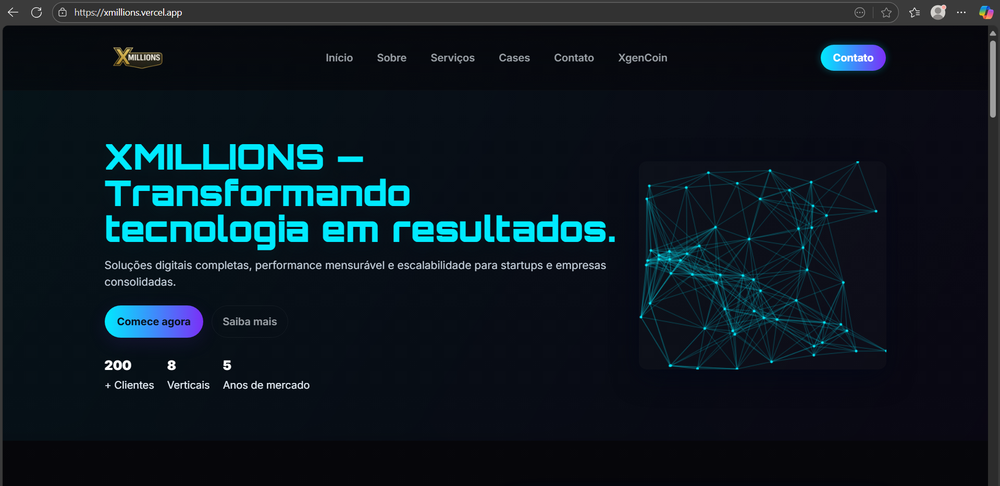
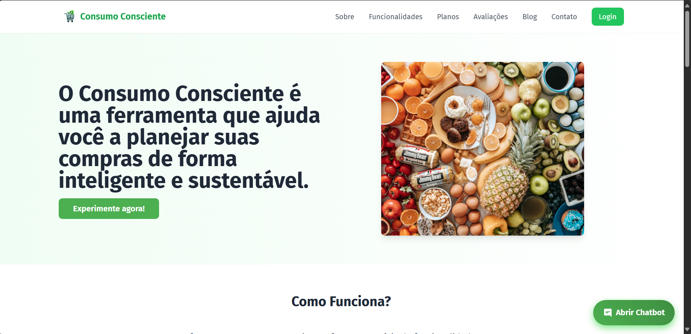
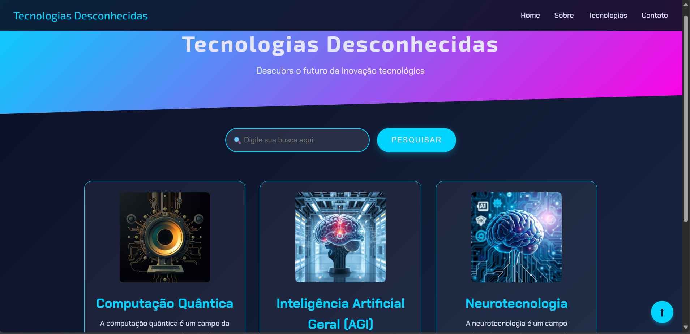

01
Desenvolvimento Web
Sites e aplicações responsivas, modernas e pensadas para entregar uma experiência consistente em qualquer tela.
Sou Israel Chaves, desenvolvedor e profissional de tecnologia focado em criar produtos web, automações e soluções com inteligência artificial.
Minha trajetória une Gestão da Tecnologia da Informação, desenvolvimento de software, criação digital e inteligência artificial.
Gosto de entender um problema, encontrar uma solução simples e transformar essa solução em algo funcional, bonito e útil.
Da interface ao back-end, da automação à IA: tecnologia aplicada para criar soluções que fazem sentido.
Sites e aplicações responsivas, modernas e pensadas para entregar uma experiência consistente em qualquer tela.
Uso de IA generativa para conteúdo, produtos, agentes e fluxos que tornam processos mais inteligentes.
Integração de ferramentas e automação de tarefas para reduzir trabalho manual e acelerar operações.
Desenvolvimento de sistemas, lógica de negócio, banco de dados e integrações para aplicações web.
Uma seleção de trabalhos que representam minha evolução em desenvolvimento, automação e experiências digitais.

01 / WEBWebsite responsivo desenvolvido para uma startup, com foco em apresentação de produto e experiência digital.
 02 / AI & DATA
02 / AI & DATAFerramenta automatizada que transforma respostas de questionário em perfis comportamentais e relatórios visuais.

03 / BACK-ENDPlataforma de gerenciamento desenvolvida com PHP e MySQL, conectando interface, regras de negócio e dados.

04 / FRONT-ENDProjeto criado com HTML, CSS e JavaScript para explorar estrutura, responsividade e interações no front-end.
Uma base multidisciplinar para trabalhar no front-end, back-end, dados, automação e inteligência artificial.
Um processo simples para transformar uma necessidade em uma solução digital funcional.
Descubro o problema, o objetivo e o que realmente precisa ser resolvido.
Defino estrutura, tecnologia e fluxo antes de transformar a ideia em código.
Desenvolvo, testo e ajusto a solução com foco em qualidade e experiência.
Coloco o projeto para funcionar e deixo a base preparada para evoluir.
Se você procura alguém para desenvolver, automatizar ou explorar uma solução com IA, vamos conversar.